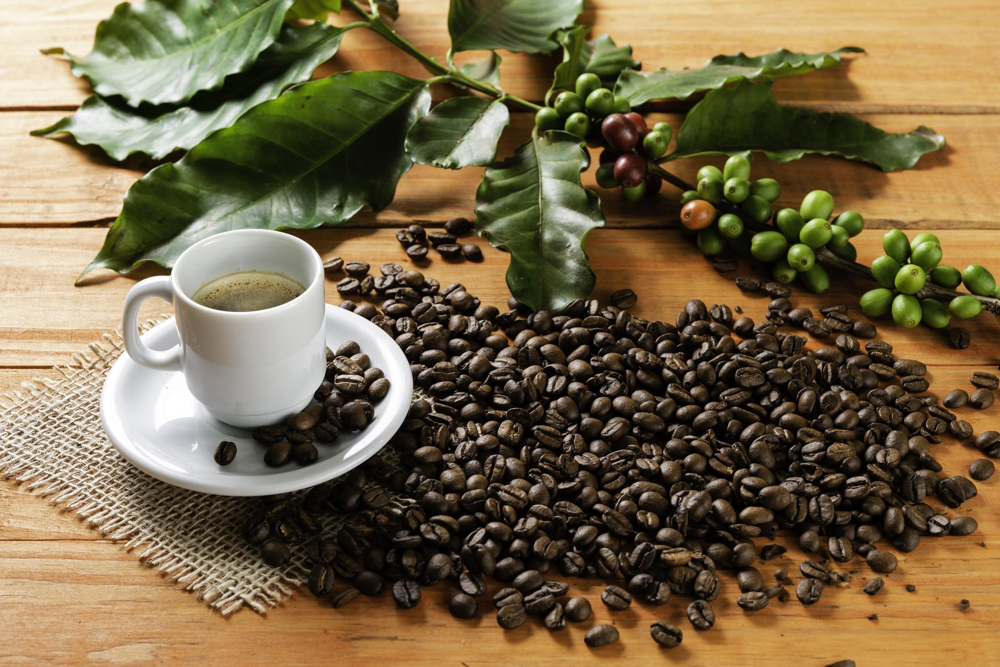

O café brasileiro
O café faz parte da história, da economia e do cotidiano do Brasil. Está presente no café da manhã, nas conversas entre amigos, nas reuniões de trabalho e nas pausas ao longo do dia. Além de uma bebida apreciada por milhões de pessoas, é um produto agrícola que conecta campo, indústria, comércio e consumidores.

O Brasil e o mercado mundial
O país está entre os principais produtores e exportadores de café. A diversidade de clima, relevo e solo favorece o cultivo em diferentes regiões, como Minas Gerais, Espírito Santo, São Paulo, Bahia, Rondônia e Paraná. Cada território apresenta condições próprias, que influenciam o desenvolvimento dos cafezais e as características dos grãos.
A atividade envolve produtores rurais, cooperativas, técnicos agrícolas, transportadoras, indústrias de torrefação, cafeterias e estabelecimentos comerciais. Por isso, o café tem importância econômica e social em diversas comunidades.
O que você encontrará neste site?
Este projeto apresenta uma visão geral do universo do café, desde sua trajetória histórica até o preparo da bebida.
- Como o café chegou ao Brasil e se espalhou pelo território;
- Como funciona o plantio, o manejo e a colheita;
- Diferenças entre Arábica e Canephora;
- Etapas de processamento, torra e moagem;
- A presença do café nos hábitos e na cultura brasileira.